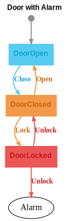

Type-Safe State Machines.
- Transit
Transit
Transit is a PureScript library for building type-safe state machines. It provides a type-level DSL for specifying state transitions, ensuring that your state machine implementation is correct at compile time.
If you're familiar with Servant from Haskell, Transit follows a similar philosophy: just as Servant uses a REST API type-level specification to generate type-safe routing functions and OpenAPI documentation, Transit uses a state machine graph type-level specification to generate type-safe update functions and state diagrams.
Key Features
- Type-safe state transitions - The compiler ensures all transitions are valid and complete
- Automatic diagram generation - Generate state diagrams and transition tables directly from your specification
- Graph analysis - Convert your state machine into a graph data structure for advanced analysis
About This Documentation
All code examples in this documentation are extracted from actual, type-checked PureScript source files. Whenever you find a unit test, it's ensured that it ran and passed. In this sense this text is not just documentation, but also a test suite.
Installation
spago install transitExample 1: A Simple Door
Let's start with a simple door state machine. Here's its state diagram:
This state machine has two states (DoorOpen and
DoorClosed) and two transitions (Close and
Open). The initial state is DoorOpen,
indicated by the grey arrow pointing to it.
Another way to represent this is a transition table:
| From State | Message | To State | ||
|---|---|---|---|---|
| DoorOpen | ⟶ | Close | ⟶ | DoorClosed |
| DoorClosed | ⟶ | Open | ⟶ | DoorOpen |
In PureScript, we represent the states and messages with simple data types:
data State = DoorOpen | DoorClosed
data Msg = Close | Open🗎 test/Examples/Door.purs L27-L29
The Classic Approach
The traditional way to implement state transitions is to write an update function that takes a state and a message and returns a new state:
updateClassic :: State -> Msg -> State
updateClassic state msg = case state, msg of
DoorOpen, Close -> DoorClosed
DoorClosed, Open -> DoorOpen
_, _ -> state🗎 test/Examples/Door.purs L35-L39
While this approach works, it has some drawbacks:
- The state diagram and implementation can easily get out of sync
- The compiler won't catch missing transitions or invalid state/message combinations
- You need to manually ensure all cases are handled correctly
The Transit Approach
With the transit library, we take a different approach. First, we define a type-level specification of the state machine:
type DoorDSL =
Transit $ Empty
:* ("DoorOpen" :@ "Close" >| "DoorClosed")
:* ("DoorClosed" :@ "Open" >| "DoorOpen")🗎 test/Examples/Door.purs L51-L54
This DSL syntax reads as: "From state DoorOpen on
message Close, transition to state DoorClosed"
and "From state DoorClosed on message Open,
transition to state DoorOpen". The Empty
starts the list, and :* adds each transition.
This type-level specification fully defines the state machine. Based on this spec, we can now create an update function that the compiler ensures only allows legal state transitions:
update :: State -> Msg -> State
update = mkUpdateGeneric @DoorDSL
(match @"DoorOpen" @"Close" \_ _ -> return @"DoorClosed")
(match @"DoorClosed" @"Open" \_ _ -> return @"DoorOpen")🗎 test/Examples/Door.purs L56-L59
Notice that the type signature is identical to the classic
approach—State -> Msg -> State. The difference is
that the compiler now enforces correctness at compile time.
Compile-Time Safety
The type system ensures that your implementation matches the specification. The following will not compile:
- 🔴 Missing a match line for a state transition
- 🔴 Matching on illegal state/message combinations
- 🔴 Returning illegal states
- 🔴 Misspelled names of states and messages
Conversely, the compiler guarantees:
- 🟢 All matches are covered
- 🟢 Each match is on the correct state/message combination
- 🟢 Each match returns the correct state
- 🟢 All symbols (type-level strings) are spelled correctly
Later we'll see how to generate the state diagram directly from the spec, ensuring it always stays in sync with the code.
[AI: find title]
As the equality of the type signatures of the classic and transit approaches update functions already suggest: Web can use them interchangeably. That means transit can be seamlessly integrated into existing codebases. Let's verify this.
We define an array of messages which we will apply to the state
machine. We use the foldl function to apply the update
functions consecutively until we reach a final state. We do this for
both the classic and transit approaches. And then we check if the final
states match our expectations.
spec1 :: Spec Unit
spec1 = describe "should follow the walk" do
let
initState = DoorOpen
msgs =
[ Close, Open, Open, Close, Open, Close, Close ]
expectedFinalState = DoorClosed
for_ [ updateClassic, update ] \updateFn ->
it "should follow the walk" do
let
actualFinalState = foldl updateFn initState msgs
actualFinalState `shouldEqual` expectedFinalState🗎 test/Examples/Door.purs L65-L79
This is not perfect yet. Because we only validate the final state. Instead we should check each intermediate state as well. We'll use this helper function several times later. So let's also factor it out and make it work with any state and message types.
spec2 :: Spec Unit
spec2 = describe "" do
let
initState = DoorOpen
walk =
[ { msg: Close, state: DoorClosed }
, { msg: Open, state: DoorOpen }
, { msg: Open, state: DoorOpen }
, { msg: Close, state: DoorClosed }
, { msg: Open, state: DoorOpen }
, { msg: Close, state: DoorClosed }
, { msg: Close, state: DoorClosed }
]
msgs = map _.msg walk
expectedStates = map _.state walk
for_ [ updateClassic, update ] \updateFn ->
it "should follow the walk" do
let
actualStates = scanl updateFn initState msgs
actualStates `shouldEqual` expectedStates🗎 test/Examples/Door.purs L81-L104
Now we can use the checkWalk function to test the state
machine:
spec :: Spec Unit
spec = do
describe "Door" do
spec1
spec2🗎 test/Examples/Door.purs L106-L110
Generate State Diagrams
Full source code: test/Examples/GenerateStateDiagrams.purs
One of the key benefits of transit is that you can generate state diagrams directly from your type-level specification. This ensures your diagrams always stay in sync with your code—no manual updates required.
To generate a state diagram, you use reflectType to
convert your type-level DSL specification to a term-level equivalent,
then write it to a Graphviz .dot file:
main :: Effect Unit
main = do
let
transit = reflectType (Proxy @DoorDSL)
TransitGraphviz.writeToFile "graphs/door.dot" transit _
{ title = "Door" }🗎 test/Examples/GenerateStateDiagrams.purs L11-L17
The process works in two steps:
reflectTypeconverts your type-level DSL specification to a term-level equivalentTransitGraphviz.writeToFileuses that to render a Graphviz.dotfile
To convert the .dot file to an SVG (or other formats),
use the Graphviz command-line tools:
dot -Tsvg graphs/door.dot -o graphs/door.svgOr for PNG:
dot -Tpng graphs/door.dot -o graphs/door.pngSince the diagram is generated from the same DSL specification used to create the type-safe update function, any changes to your state machine are automatically reflected in both the code and the diagram. This eliminates the common problem of documentation getting out of sync with implementation.
Generate Transition Tables
Full source code: test/Examples/GenerateTransitionTables.purs
In addition to state diagrams, you can also generate transition tables from the same graph data structure. This provides a tabular view of all state transitions, which can be easier to read for some use cases.
The process is identical to generating state diagrams—you use
reflectType to convert your DSL specification, but then use
TransitTable.writeToFile instead:
main :: Effect Unit
main = do
let
transit = reflectType (Proxy @DoorDSL)
TransitTable.writeToFile "graphs/door.html" transit _
{ title = "Door" }🗎 test/Examples/GenerateTransitionTables.purs L11-L17
This generates an HTML file containing a table with columns for "From State", "Message", and "To State". The table can be embedded directly in documentation (as shown in the examples above) or viewed in a browser.
Since both the state diagram and transition table are generated from the same DSL specification, they're guaranteed to be consistent with each other and with your type-level specification.
Example2: Door with Pin
Full source code: test/Examples/DoorWithPin.purs
Now let's add a PIN code to our door lock. This introduces two important concepts: states with data and conditional transitions.

In this example, the DoorLocked state stores a PIN code,
and the Unlock message includes the entered PIN. The unlock
operation can succeed (transitioning to DoorClosed) or fail
(staying in DoorLocked), depending on whether the entered
PIN matches the stored one.
Notice the diamond node in the state diagram—this represents a conditional transition where the outcome depends on runtime data.
The transition table shows both possible outcomes:
| From State | Message | To State | ||
|---|---|---|---|---|
| DoorOpen | ⟶ | Close | ⟶ | DoorClosed |
| DoorClosed | ⟶ | Open | ⟶ | DoorOpen |
| DoorClosed | ⟶ | Lock | ⟶ | DoorLocked |
| DoorLocked | ⟶ | Unlock | ⟶ | DoorLocked |
| DoorLocked | ⟶ | Unlock | ⟶ | DoorClosed |
The PureScript types now include data in both states and messages:
data State
= DoorOpen
| DoorClosed
| DoorLocked { pin :: String }
data Msg
= Close
| Open
| Lock { newPin :: String }
| Unlock { enteredPin :: String }🗎 test/Examples/DoorWithPin.purs L22-L31
The Classic Approach
The classic update function now needs to handle state and message data:
updateClassic :: State -> Msg -> State
updateClassic state msg = case state, msg of
DoorOpen, Close -> DoorClosed
DoorClosed, Open -> DoorOpen
DoorClosed, Lock { newPin } -> DoorLocked { pin: newPin }
DoorLocked { pin }, Unlock { enteredPin } ->
if pin == enteredPin then
DoorClosed
else
DoorLocked { pin }
_, _ -> state🗎 test/Examples/DoorWithPin.purs L37-L47
The Transit Approach
In the DSL specification, we express conditional transitions by listing multiple possible target states:
type DoorDSL =
Transit $ Empty
:* ("DoorOpen" :@ "Close" >| "DoorClosed")
:* ("DoorClosed" :@ "Open" >| "DoorOpen")
:* ("DoorClosed" :@ "Lock" >| "DoorLocked")
:*
( "DoorLocked" :@ "Unlock"
>| "DoorClosed"
>| "DoorLocked"
)🗎 test/Examples/DoorWithPin.purs L53-L62
The syntax >| "DoorClosed" >| "DoorLocked"
indicates that the Unlock message from
DoorLocked can transition to either state, depending on
runtime conditions.
The update function now has access to both the current state and the message data, allowing you to implement the conditional logic:
update :: State -> Msg -> State
update = mkUpdateGeneric @DoorDSL
( match @"DoorOpen" @"Close" \_ _ ->
return @"DoorClosed"
)
( match @"DoorClosed" @"Open" \_ _ ->
return @"DoorOpen"
)
( match @"DoorClosed" @"Lock" \_ msg ->
return @"DoorLocked" { pin: msg.newPin }
)
( match @"DoorLocked" @"Unlock" \state msg ->
if state.pin == msg.enteredPin then
return @"DoorClosed"
else
return @"DoorLocked" { pin: state.pin }
)🗎 test/Examples/DoorWithPin.purs L64-L80
The match handlers receive both the current state and the message, giving you access to all the data needed to make runtime decisions. The type system still ensures that:
- 🔴 You can only return states that are valid targets for that transition
- 🔴 You handle all required transitions
- 🟢 The conditional logic is type-safe
Example3: Door with Pin and Alarm
Full source code: test/Examples/DoorWithAlarm.purs
Now let's extend the door with PIN by adding an alarm system that triggers after too many failed unlock attempts. This introduces labeled conditional transitions, which allow you to document the different conditions that lead to different states.
In this example, the DoorLocked state now tracks the
number of failed unlock attempts. When unlocking:
- If the PIN is correct, the door transitions to
DoorClosed - If the PIN is incorrect but attempts < 3, it stays in
DoorLockedwith an incremented attempt counter - If the PIN is incorrect and attempts >= 3, it transitions to
Alarmstate
The transition table shows all possible outcomes:
| From State | Message | To State | ||
|---|---|---|---|---|
| DoorOpen | ⟶ | Close | ⟶ | DoorClosed |
| DoorClosed | ⟶ | Open | ⟶ | DoorOpen |
| DoorClosed | ⟶ | Lock | ⟶ | DoorLocked |
| DoorLocked | ⟶ | Unlock ? TooManyAttempts | ⟶ | Alarm |
| DoorLocked | ⟶ | Unlock ? PinIncorrect | ⟶ | DoorLocked |
| DoorLocked | ⟶ | Unlock ? PinCorrect | ⟶ | DoorClosed |
The PureScript types extend the previous example with an alarm state and attempt tracking:
data State
= DoorOpen
| DoorClosed
| DoorLocked { pin :: String, attempts :: Int }
| Alarm
data Msg
= Close
| Open
| Lock { newPin :: String }
| Unlock { enteredPin :: String }🗎 test/Examples/DoorWithAlarm.purs L24-L34
The Classic Approach
The classic update function now handles the attempt counter and alarm condition:
updateClassic :: State -> Msg -> State
updateClassic state msg = case state, msg of
DoorOpen, Close -> DoorClosed
DoorClosed, Open -> DoorOpen
DoorClosed, Lock { newPin } -> DoorLocked { pin: newPin, attempts: 0 }
DoorLocked { pin, attempts }, Unlock { enteredPin } ->
let
pinCorrect = pin == enteredPin
attemptsExceeded = attempts >= 3
in
case pinCorrect, attemptsExceeded of
true, _ -> DoorClosed
false, true -> DoorLocked { pin, attempts: attempts + 1 }
false, false -> Alarm
_, _ -> state🗎 test/Examples/DoorWithAlarm.purs L40-L54
The Transit Approach
With transit, we use labeled conditional transitions
to document the different conditions. The :? operator
allows you to label each possible outcome:
type DoorDSL =
Transit $ Empty
:* ("DoorOpen" :@ "Close" >| "DoorClosed")
:* ("DoorClosed" :@ "Open" >| "DoorOpen")
:* ("DoorClosed" :@ "Lock" >| "DoorLocked")
:*
( "DoorLocked" :@ "Unlock"
>| ("PinCorrect" :? "DoorClosed")
>| ("PinIncorrect" :? "DoorLocked")
>| ("TooManyAttempts" :? "Alarm")
)🗎 test/Examples/DoorWithAlarm.purs L60-L70
The syntax ("PinCorrect" :? "DoorClosed") labels the
transition path, making it clear in the specification what condition
leads to which state. This is especially useful when you have multiple
conditional transitions from the same state/message pair.
The update function uses returnVia instead of
return to specify which labeled path to take:
update :: State -> Msg -> State
update = mkUpdateGeneric @DoorDSL
( match @"DoorOpen" @"Close" \_ _ ->
return @"DoorClosed"
)
( match @"DoorClosed" @"Open" \_ _ ->
return @"DoorOpen"
)
( match @"DoorClosed" @"Lock" \_ msg -> return @"DoorLocked"
{ pin: msg.newPin
, attempts: 0
}
)
( match @"DoorLocked" @"Unlock" \state msg ->
let
pinCorrect = state.pin == msg.enteredPin
attemptsExceeded = state.attempts >= 3
in
case pinCorrect, attemptsExceeded of
true, _ -> returnVia @"PinCorrect" @"DoorClosed"
false, true -> returnVia @"PinIncorrect" @"DoorLocked"
{ pin: state.pin
, attempts: state.attempts + 1
}
false, false -> returnVia @"TooManyAttempts" @"Alarm"
)🗎 test/Examples/DoorWithAlarm.purs L72-L98
The returnVia function takes a label (like
@"PinCorrect") and a target state. The type system ensures
that:
- 🔴 You can only use labels that are defined in the DSL specification
- 🔴 Each label must map to the correct target state
- 🟢 The labels make the code self-documenting—it's immediately clear which condition leads to which state
Labeled transitions are particularly valuable when you have complex conditional logic with multiple possible outcomes, as they provide both type safety and clear documentation of the state machine's behavior.
Type signatures
Full source code: test/Examples/Signatures.purs
This chapter demonstrates the type signatures that transit enforces
for your update functions. To show these signatures without implementing
the actual logic, we use an unimplemented helper function
that satisfies the type checker:
unimplemented :: forall a. a
unimplemented = unsafeCoerce "not yet implemented"🗎 test/Examples/Signatures.purs L15-L16
The update function demonstrates the type signatures
that transit enforces. The straightforward part is the
State and Msg types—each match handler
receives the exact state and message types for that transition. However,
the return type is more complex: depending on the specification, a
transition may allow multiple possible target states, so we need to
return a subset of the state type.
Unfortunately, PureScript's ADTs (Algebraic Data Types) don't allow
expressing a subset of cases from a union type. This is where
Variant comes in—it's perfect for representing a subset of
cases from a union type. Each match handler must return a
Variant type that precisely matches the possible target
states defined in the DSL specification.
This approach requires internal conversion between ADT and
Variant representations. If you'd like to avoid this
conversion overhead, you can define your State and
Msg types as Variant directly from the start,
as shown in the next chapter.
update :: State -> Msg -> State
update = mkUpdateGeneric @DoorDSL
( match @"DoorOpen" @"Close"
( \(state :: Unit) (msg :: Unit) ->
unimplemented
:: Variant ("DoorClosed" :: ReturnState Unit)
)
)
( match @"DoorClosed" @"Open"
( \(state :: Unit) (msg :: Unit) ->
unimplemented
:: Variant ("DoorOpen" :: ReturnState Unit)
)
)
( match @"DoorClosed" @"Lock"
( \(state :: Unit) (msg :: { newPin :: String }) ->
unimplemented
:: Variant ("DoorLocked" :: ReturnState { attempts :: Int, pin :: String })
)
)
( match @"DoorLocked" @"Unlock"
( \(state :: { attempts :: Int, pin :: String }) (msg :: { enteredPin :: String }) ->
unimplemented
:: Variant
( "Alarm" :: ReturnStateVia "TooManyAttempts" Unit
, "DoorClosed" :: ReturnStateVia "PinCorrect" Unit
, "DoorLocked" :: ReturnStateVia "PinIncorrect" { attempts :: Int, pin :: String }
)
)
)🗎 test/Examples/Signatures.purs L18-L47
Variants
Full source code: test/Examples/Variants.purs
Instead of using ADTs for State and Msg,
you can define them directly as Variant types. This
eliminates the conversion overhead between ADT and Variant
representations, and you use mkUpdate instead of
mkUpdateGeneric:
type State = Variant
( "DoorOpen" :: Unit
, "DoorClosed" :: Unit
, "DoorLocked" :: { pin :: String }
)
type Msg = Variant
( "Close" :: Unit
, "Open" :: Unit
, "Lock" :: { newPin :: String }
, "Unlock" :: { enteredPin :: String }
)
update :: State -> Msg -> State
update = mkUpdate @DoorDSL
( match @"DoorOpen" @"Close" \_ _ ->
return @"DoorClosed"
)
( match @"DoorClosed" @"Open" \_ _ ->
return @"DoorOpen"
)
( match @"DoorClosed" @"Lock" \_ msg ->
return @"DoorLocked" { pin: msg.newPin }
)
( match @"DoorLocked" @"Unlock" \state msg ->
if state.pin == msg.enteredPin then
return @"DoorClosed"
else
return @"DoorLocked" { pin: state.pin }
)🗎 test/Examples/Variants.purs L17-L76
Monadic update functions
Full source code: test/Examples/Monadic.purs
So far, all our examples have used pure update functions with the
type signature State -> Msg -> State. However,
sometimes you need to perform side effects during state transitions—such
as logging, making HTTP requests, or interacting with external
systems.
For these cases, transit provides mkUpdateGenericM,
which creates update functions that operate in a monadic context. The
type signature becomes State -> Msg -> m State, where
m is any Monad (commonly Effect,
Aff, or ReaderT).
The key differences from pure update functions are:
- Use
mkUpdateGenericMinstead ofmkUpdateGeneric- This tells transit you want a monadic update function - Use
matchMinstead ofmatch- This allows your handlers to return values in the monadic context - Type signature includes the monad - Instead of
State -> Msg -> State, you getState -> Msg -> m State
Here's an example that adds logging to state transitions:
update :: State -> Msg -> Effect State
update = mkUpdateGenericM @DoorDSL
( matchM @"DoorOpen" @"Close" \_ _ -> do
Console.log "You just closed the door"
pure $ return @"DoorClosed"
)
( matchM @"DoorClosed" @"Open" \_ _ -> do
Console.log "You just opened the door"
pure $ return @"DoorOpen"
)🗎 test/Examples/Monadic.purs L10-L19
Each handler can now perform side effects (like logging) before
returning the new state. The return function still works
the same way—you wrap your state value with it, and then wrap that in
pure to lift it into the monadic context.
Example 4: Seven Bridges of Königsberg
Full source code: test/Examples/BridgesKoenigsberg.purs
So far, we've seen how transit helps you build type-safe state machines and generate state diagrams and transition tables. But the power of transit extends far beyond documentation generation. The reflected data structure—the term-level representation of your type-level DSL specification—can be converted into a general-purpose graph data structure, enabling sophisticated graph analysis.
This example demonstrates this capability using the famous Seven Bridges of Königsberg problem. In 1736, the mathematician Leonhard Euler was asked whether it was possible to walk through the city of Königsberg (now Kaliningrad) crossing each of its seven bridges exactly once and returning to the starting point. Euler's solution to this problem laid the foundation for graph theory.
The problem can be modeled as a graph where:
- Nodes represent the four land areas (A, B, C, and D)
- Edges represent the seven bridges connecting them

While transit is designed for directed state machines, we can model an undirected graph by defining bidirectional transitions for each bridge. The renderer can then summarize these complementary edges into a single undirected edge for visualization. Notice how each bridge has two transitions—one in each direction:
data State = LandA | LandB | LandC | LandD
data Msg
= Cross_a
| Cross_b
| Cross_c
| Cross_d
| Cross_e
| Cross_f
| Cross_g🗎 test/Examples/BridgesKoenigsberg.purs L28-L37
type BridgesTransitions =
Transit $ Empty
:* ("LandA" :@ "Cross_a" >| "LandB")
:* ("LandB" :@ "Cross_a" >| "LandA")
:* ("LandA" :@ "Cross_b" >| "LandB")
:* ("LandB" :@ "Cross_b" >| "LandA")
:* ("LandA" :@ "Cross_c" >| "LandC")
:* ("LandC" :@ "Cross_c" >| "LandA")
:* ("LandA" :@ "Cross_d" >| "LandC")
:* ("LandC" :@ "Cross_d" >| "LandA")
:* ("LandA" :@ "Cross_e" >| "LandD")
:* ("LandD" :@ "Cross_e" >| "LandA")
:* ("LandB" :@ "Cross_f" >| "LandD")
:* ("LandD" :@ "Cross_f" >| "LandB")
:* ("LandC" :@ "Cross_g" >| "LandD")
:* ("LandD" :@ "Cross_g" >| "LandC")🗎 test/Examples/BridgesKoenigsberg.purs L69-L90
| From State | Message | To State | ||
|---|---|---|---|---|
| LandB | ⟵ | Cross_a | ⟶ | LandA |
| LandB | ⟵ | Cross_b | ⟶ | LandA |
| LandC | ⟵ | Cross_c | ⟶ | LandA |
| LandC | ⟵ | Cross_d | ⟶ | LandA |
| LandD | ⟵ | Cross_e | ⟶ | LandA |
| LandD | ⟵ | Cross_f | ⟶ | LandB |
| LandD | ⟵ | Cross_g | ⟶ | LandC |
The transition table shows the undirected nature of the graph—each bridge can be crossed in both directions. When generating the visualization, the renderer summarizes these bidirectional edges into a single undirected edge:

Graph Analysis
The real power of transit becomes apparent when we convert the
reflected data structure into a general-purpose graph. Using
mkStateGraph, we transform the transit specification into a
StateGraph—a specialized Graph type configured
with edge and node labels suitable for state machine analysis.
Once we have this graph data structure, we can perform sophisticated analysis using standard graph algorithms. For the Seven Bridges problem, we want to determine if the graph has an Eulerian circuit (a path that visits every edge exactly once and returns to the starting point) or an Eulerian trail (a path that visits every edge exactly once but doesn't necessarily return to the start).
Euler's theorem states that:
- An undirected graph has an Eulerian circuit if and only if it is connected and has zero vertices of odd degree
- An undirected graph has an Eulerian trail if and only if it is connected and has exactly zero or two vertices of odd degree
We can check these conditions using helper functions from the
Test.Examples.Common module:
hasEulerCircle :: forall e n. Ord n => Ord e => Graph e n -> Boolean
hasEulerCircle g = true
&& Graph.isUndirected g
&& countOddOutgoingEdges g == 0
hasEulerTrail :: forall e n. Ord n => Ord e => Graph e n -> Boolean
hasEulerTrail g = true
&& Graph.isUndirected g
&& (countOddOutgoingEdges g == 0 || countOddOutgoingEdges g == 2)
countOddOutgoingEdges :: forall e n. Ord n => Ord e => Graph e n -> Int
countOddOutgoingEdges g =
let
nodes = Graph.getNodes g
in
Array.length $ Array.filter
(\node -> Int.odd $ Set.size (Graph.getOutgoingEdges node g))
(Set.toUnfoldable nodes)🗎 test/Examples/Common.purs L23-L40
To perform the analysis, we convert the reflected transit specification into a graph and then check its properties:
spec :: Spec Unit
spec = do
describe ".." do
it "..." do
let transit = reflectType (Proxy @BridgesTransitions)
let graph = mkStateGraph transit
Set.size (Graph.getOutgoingEdges "LandA" graph) `shouldEqual` 5
Set.size (Graph.getOutgoingEdges "LandB" graph) `shouldEqual` 3
Set.size (Graph.getOutgoingEdges "LandC" graph) `shouldEqual` 3
Set.size (Graph.getOutgoingEdges "LandD" graph) `shouldEqual` 3
hasEulerCircle graph `shouldEqual` false
hasEulerTrail graph `shouldEqual` false
main :: Effect Unit
main = do
let
transit = reflectType (Proxy @BridgesTransitions)
TransitGraphviz.writeToFile "graphs/bridges-koenigsberg.dot" transit _
{ useUndirectedEdges = true }
TransitTable.writeToFile "graphs/bridges-koenigsberg.html" transit _
{ useUndirectedEdges = true }🗎 test/Examples/BridgesKoenigsberg.purs L119-L145
The key steps are:
- Reflect the type-level specification:
reflectType (Proxy @BridgesTransitions)converts the type-level DSL to a term-level representation - Convert to a graph:
mkStateGraph transittransforms the transit specification into aStateGraph—a general-purpose graph data structure - Perform analysis: Use graph analysis functions like
hasEulerCircleandhasEulerTrailto check properties
These functions check whether the graph is undirected and count how many vertices have an odd number of outgoing edges. For the Seven Bridges of Königsberg:
- LandA has 5 bridges (odd)
- LandB has 3 bridges (odd)
- LandC has 3 bridges (odd)
- LandD has 3 bridges (odd)
Since all four vertices have an odd degree, the graph has 4 vertices with odd degree. According to Euler's theorem, this means:
- ❌ The graph does not have an Eulerian circuit (would require 0 odd-degree vertices)
- ❌ The graph does not have an Eulerian trail (would require 0 or 2 odd-degree vertices)
This confirms Euler's original conclusion: it's impossible to walk through Königsberg crossing each bridge exactly once.
This example demonstrates that transit's value extends far beyond state machine documentation. By reflecting the type-level specification to a term-level graph data structure, you gain access to a rich ecosystem of graph algorithms and analysis tools. The same DSL that ensures compile-time correctness for your state transitions can also power runtime graph analysis, pathfinding, cycle detection, and more.
In the next example, we'll see a graph that does have an Eulerian trail, demonstrating how transit can help verify and understand graph properties beyond simple state machines.
Example 5: This is the house of Santa Claus
Full source code: test/Examples/HouseOfSantaClaus.purs
[AI: in german, this is the house of Santa Claus, more common, thus explain]

| Syllable | German | English |
|---|---|---|
| 1 | das | This |
| 2 | ist | is |
| 3 | das | the |
| 4 | Haus | house |
| 5 | vom | of |
| 6 | Ni- | San- |
| 7 | ko- | ta |
| 8 | laus | Claus |
type TransitSantaClaus =
Transit $ Empty
:* ("N_1" :@ "E_a" >| "N_2")
:* ("N_2" :@ "E_a" >| "N_1")
:* ("N_2" :@ "E_b" >| "N_3")
:* ("N_3" :@ "E_b" >| "N_2")
:* ("N_3" :@ "E_c" >| "N_5")
:* ("N_5" :@ "E_c" >| "N_3")
:* ("N_5" :@ "E_d" >| "N_4")
:* ("N_4" :@ "E_d" >| "N_5")
:* ("N_4" :@ "E_e" >| "N_1")
:* ("N_1" :@ "E_e" >| "N_4")
:* ("N_1" :@ "E_f" >| "N_3")
:* ("N_3" :@ "E_f" >| "N_1")
:* ("N_2" :@ "E_g" >| "N_4")
:* ("N_4" :@ "E_g" >| "N_2")
:* ("N_3" :@ "E_h" >| "N_4")
:* ("N_4" :@ "E_h" >| "N_3")🗎 test/Examples/HouseOfSantaClaus.purs L79-L103
| From State | Message | To State | ||
|---|---|---|---|---|
| N_2 | ⟵ | E_a | ⟶ | N_1 |
| N_3 | ⟵ | E_b | ⟶ | N_2 |
| N_5 | ⟵ | E_c | ⟶ | N_3 |
| N_5 | ⟵ | E_d | ⟶ | N_4 |
| N_4 | ⟵ | E_e | ⟶ | N_1 |
| N_3 | ⟵ | E_f | ⟶ | N_1 |
| N_4 | ⟵ | E_g | ⟶ | N_2 |
| N_4 | ⟵ | E_h | ⟶ | N_3 |
spec :: Spec Unit
spec = do
describe "House of Santa Claus" do
it "should have 8 states" do
let transit = reflectType (Proxy @TransitSantaClaus)
let graph = mkStateGraph transit
let walk = [ E_f, E_h, E_g, E_a, E_e, E_d, E_c, E_b ]
Array.length (Array.nub walk) `shouldEqual` 8
foldl update N_1 walk `shouldEqual` N_2
hasEulerCircle graph `shouldEqual` false
hasEulerTrail graph `shouldEqual` true
pure unit
describe "should follow the walk" do
let
initState = N_1
walk =
[ { msg: E_f, state: N_3 }
, { msg: E_h, state: N_4 }
, { msg: E_g, state: N_2 }
, { msg: E_a, state: N_1 }
, { msg: E_e, state: N_4 }
, { msg: E_d, state: N_5 }
, { msg: E_c, state: N_3 }
, { msg: E_b, state: N_2 }
]
let
msgs = map _.msg walk
expectedStates = map _.state walk
describe "classic update" do
it "should follow the walk" do
let actualStates = scanl updateClassic initState msgs
actualStates `shouldEqual` expectedStates
describe "transit update" do
it "should follow the walk" do
let actualStates = scanl update initState msgs
actualStates `shouldEqual` expectedStates
main :: Effect Unit
main = do
let
transit = reflectType (Proxy @TransitSantaClaus)
TransitGraphviz.writeToFile "graphs/house-of-santa-claus.dot" transit _
{ useUndirectedEdges = true
, nodeAttrsRaw = Just \node -> case node of
"N_1" -> "pos=\"0,0!\""
"N_2" -> "pos=\"2,0!\""
"N_3" -> "pos=\"2,2!\""
"N_4" -> "pos=\"0,2!\""
"N_5" -> "pos=\"1,3!\""
_ -> ""
, globalAttrsRaw = Just "layout=neato"
}
TransitTable.writeToFile "graphs/house-of-santa-claus.html" transit _
{ useUndirectedEdges = true }